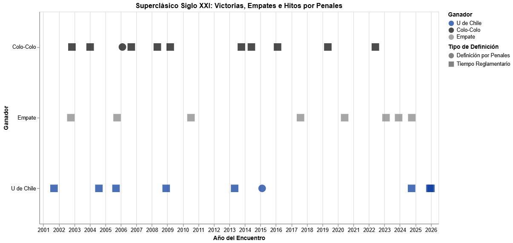

Hay al menos dos días en el año en que Chile entero cambia de ritmo. No importa que fanático seas de uno de estos equipos; la semana previa al Súperclásico entre la Universidad de Chile y Colo-Colo se respira distinto. El partido se mete en todos los lados posibles del país. Más allá de de cualquier táctica o estrategia, sino en la agresividad en cual se va a cada balón y cada roce en una falta. ¿Qué es lo que realmente enciende la pólvora en el partido más importante del fútbol chileno?
Durante el siglo XXI, se han disputado un total de 63 enfrentamientos, repartidas entre el Torneo Nacional, la Copa Chile y la Supercopa. Es un registro que carga la balanza con el peso de la hegemonía: el conjunto albo domina el siglo con 30 victorias, dejando 17 empates y apenas 16 triunfos en las vitrinas azules. Las rachas de dominio moldean la psicología del juego, haciendo que el equipo que va abajo juegue contra el reloj y contra su propia frustración, elevando las revoluciones de cada cruce.

La dominancia por parte de los albos también se ve reflejado en laos goles. los goles a favor del cuadro de Macul es de unas 89 vecesl, frente a las 69 anotaciones de los del Chuncho. A pesar de esta tendencia, el destino a veces regala anomalías difíciles de borrar: como aquel 2012, cuando los azules dirigidos por Jorge Sampaoli rompió el partido con un 5-0 en el Estadio Nacional.Durante los Superclásicos, el 65% de las veces el marcador ha gritado dos o más goles. Solo en dos ocasiones el conflicto ha tenido que resolverse desde los doce pasos. La primera, en la mítica final del Torneo Nacional 2006, donde Colo-Colo alzó la copa tras dos partidos de alto nivel; la segunda, en la final de la Copa Chile 2015, cuando Jhonny Herrera, el capitán azul, cobró su revancha en penales.